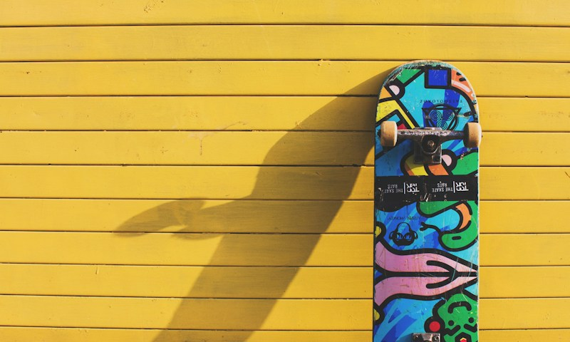
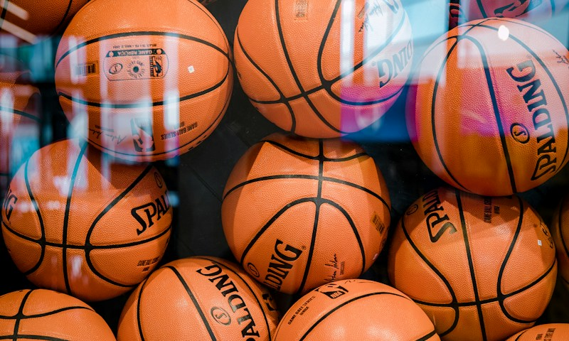
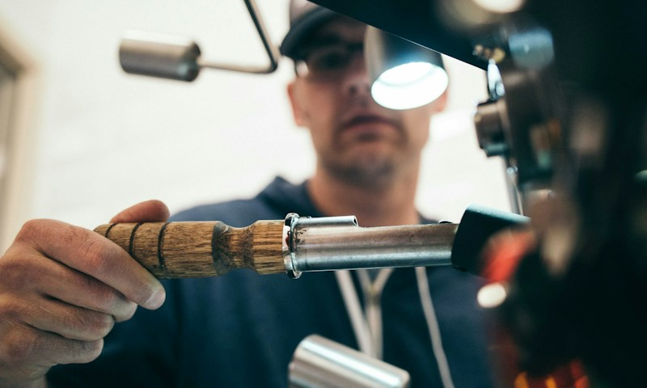

🛹 SkatePista de Skate — Parque 18 de Maio
Pista pública com bowl e street, aberta ao público 24h.
Ver no MapaDescubra os melhores locais de prática esportiva em Caruaru, calcule sua dieta ideal e transforme seu estilo de vida com o Viva+.

🛹 SkatePista pública com bowl e street, aberta ao público 24h.
Ver no Mapa
🏀 QuadraQuadra coberta para futsal, basquete e vôlei. Iluminação noturna.
Ver no Mapa
🚴 Ciclovia4,2 km de ciclovia contínua com sinalização e pontos de descanso.
Ver no MapaA Taxa Metabólica Basal (TMB) é a quantidade mínima de energia que seu corpo precisa em repouso. Conhecê-la é o primeiro passo para uma dieta eficaz.
Nossa calculadora usa a equação de Harris-Benedict revisada para estimar sua TMB e sugere quantidades de alimentos base como arroz, feijão e proteínas para cada refeição.
Calcular Minha DietaTaxa Metabólica Basal calculada com precisão
Gramas ideais por refeição
Porção equilibrada de leguminosas
Quantidade adequada ao seu objetivo